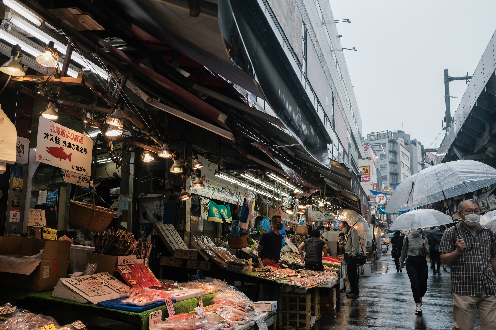
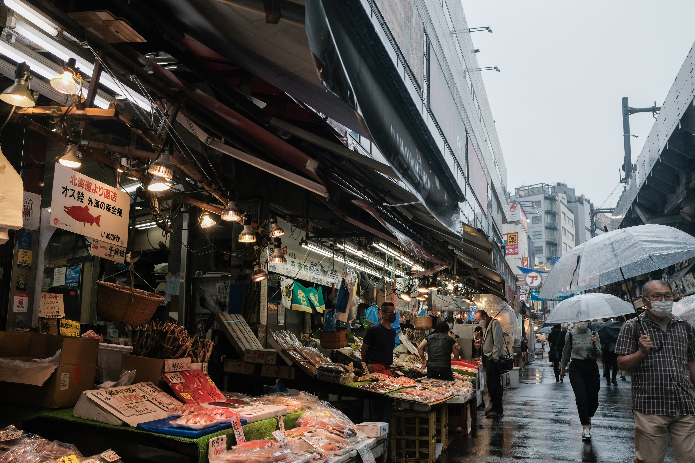
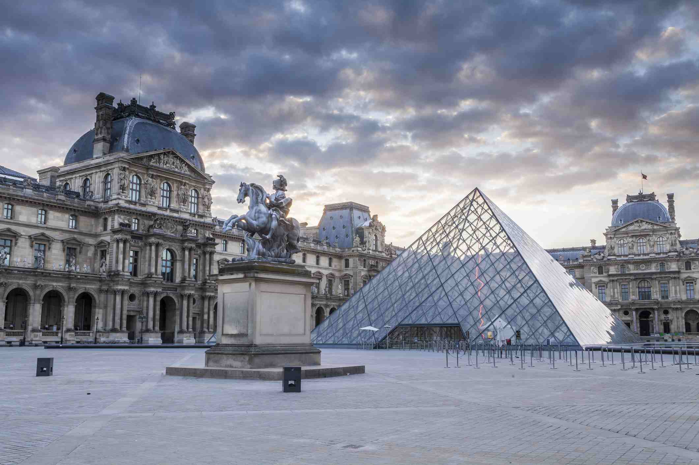
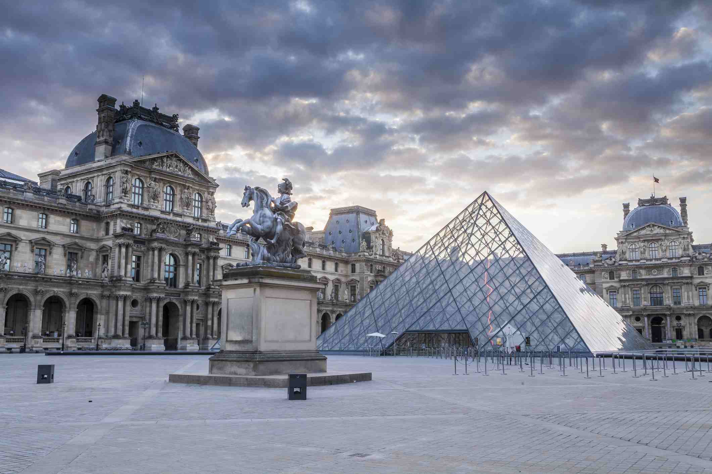

قارة اسيا
 

اليابان
من السهل أن تشعر ببعض التوتر والارتباك أثناء زيارتك الأولى إلى اليابان؛ لذلك عليك بالتعرّف على الأساسيات قبل السفر، والعثور على ما تحتاج إليه من معلومات عن البلد بالرجوع إلى دليلنا لمساعدتك على التخطيط. وسّع معرفتك بعادات اليابان وثقافتها وخدمات الاتصال بشبكات الإنترنت اللاسلكي، بالإضافة إلى طقس كل الفصول، وجغرافية البلد، وخيارات تسليم الأمتعة. ستجد هنا الإجابة عن العديد من الأسئلة التي تراود ذهن زوار هذا البلد للمرة الأولى، بالإضافة إلى نصائح من أهل الخبرة وإرشادات عملية لمساعدتك على التنقل في البلاد بكل ثقة.
الامور الاساسيه عن اليابان
العملات:الين هي العمله المتداوله في اليابان
الطقس
قد يختلف الطقس من منطقة لأخرى في اليابان بشكل كبير حسب المكان الذي ستسافر إليه، ولذلك فمن الأفضل معرفة
أفضل الأوقات للزيارة والأشياء التي تحتاج لاصطحابها معك.
معلومات التأشيرة
يمكن للمسافرين من 68 دولة حول العالم زيارة اليابان لمدة تصل إلى 90 يومًا دون الحاجة إلى تأشيرة.
اهم المناطق السياحيه في اليابان
- متحف هيروشيما التذكاري للسلام
- شوارع مدينة كيوتو
- قلعة ماتسوموتا
- معبد كينكاكو جي فى مدينة كيوتو
- مدينة كوماموتو
- حديقة شينجوكو الوطنية في طوكيو
المالديف
الطبيعة الخلابة التي تأسر أنفاس الناظر إليها والمناظر التي يعجز اللسان عن وصفها تجدها في جزر المالديف التي يحلم بها محبي السياحة والسفر والتي تعد من أكثر المناطق السياحية الجاذبة للعالم والتي يتوافد إليها السياح من جميع أنحاء العالم، كما أنها تعد وجهة لقضاء شهر العسل أو الاستمتاع بوقت رائع مع العائلة أو الأصدقاء
الامور الاساسيه عن المالديف
الطقس: متوسط درجة الحرارة في جزر المالديف مستقر تقريبًا طوال السنة حيث يبلغ حوالي 29/32 درجة مئوية. والرطوبة مستقرة على مدار العام حيث تبلغ حوالي 80%. وهناك نوعان من فصول متميزة، موسم الجفاف (شمال شرق هي رياح الموسمية) وموسم الرطوبة (هي رياح الموسمية الجنوبي الغربي).المصاريف : من المعروف أن المالديف ليست دولة منتجة وبالتالي جميع المشروبات والمأكولات يتم استيرادها من الخارج، مما يزيد من الأسعار عند الشراء وعند حجز الفنادق والمنتجعات. كما لا بد أن تحرص على وجود نقدية معك دائمًا وذلك لأنه لا توجد أجهزة الصراف الآلي في جزر المالديف باستثناء العاصمة، فإذا كنت بحاجة للحصول على بعض النقود، ستضطر للذهاب إلى ماليه، وهو أمر مرهق ومكلف
اهم المناطق السياحيه في المالديف
- جزيرة هولهومالي
- باراديس أيلاند
- جزيرة أدو المرجانية
- المتحف الوطني
- جزيرة ماليه
ماليزيا
ان ماليزيا تعتبرمن اجمل البلدان للسياحه حيث أنها تمتلك توليفة متنوعة تُرضي مُختلف الأذواق،
فمن بين المتاحف والمباني الأثرية الكلاسيكية تبزغ أطول وأعظم ناطحات سحاب في العالم، وما بين المساجد والمعابد عظيمة البُنيان تسري البُحيرات الصافية، ومن خلال شبكة قطارات ونقل متطورة تنتقل من قلب القرى ذات الطبيعة الخضراء الخلابة والمنازل المتواضعة تُحيط بها قمم الجبال لأرقى المُنتجعات والشواطئ.
اهم الامور الاساسيه عن ماليزيا
الطقس: الوقت المثالي للسفر إلى مناطق ماليزيا هو من مارس إلى أكتوبر، في هذا الوقت، تتوقف معظم الأمطار الغزيرة التي تسقط عادة في ماليزيا بسبب وصول الرياح الموسمية الشمالية الغربية
التسوق: ماليزيا تعتبر مكان ملائم لكل محبي التسوق حول العالم ، ففي كوالالمبور تتعدد المنتجات اليدوية والملابس الرائعة ، فتجد فيها مراكز تسوق كبيرة تقدم خصومات هائلة للزوار
العمله: عتمد دولة ماليزيا على عملتها الرئيسيّة التي تسمّى: رينغيت ماليزيّ،
تكاليف السياحه في ماليزيا : بكل تأكيد، الميزانية اليومية تختلف من شخص لآخر، نقدم لك أدناه ميزانيتان متوسطتان:
يمكنك بميزانية منخفضة تتراوح بين 30 إلى 50 دولار في اليوم أن تقيم في نزل أو غرفة خاصة وتتنقل بوسائل النقل العامة وتأكل المأكولات في المحلات والشارع.
بميزانية أعلى تصل إلى 75 دولار في اليوم، يمكنك الإقامة في فندق فاخر، وتناول عشاء فاخر في مطعم، والقيام بأنشطة رائعة.
اهم الاماكن السياحيه في ماليزيا
- السياحة في لنكاوي
- السياحة في بينانج
- السياحة في ملقا أو مالاكا
- السياحة في بانكور
- السياحة في كوتا كينابالو
- السياحة في باهانغ
قارة اوربا
 

باريس
لا يوجد مكان على سطح الأرض يجعل القلب عند ذكره ينتشي فرحًا وخفقانًا مثل باريس. فهذه المدينة تزخر بفنونها الساحرة وتصميماتها المعمارية الفاتنة وبيئتها الثقافية الرائعة ومطبخها المذهل،
وهو ما يجعلها وجهة جاذبة بشكل لا مثيل له. وبالرغم من ذلك، فهناك أيضًا سحر أكثر هدوءًا ينتظر من يستمتع به ويستكشفه،
ألا وهو: الممرات المرصوفة بالحصى وأصناف الحلوى والمعجنات الشهية والرائعة التي تنتشر في كل بقعة من أرجائها، فضلاً عن
المطاعم والحانات الصغيرة المريحة التي تجذب الزائرين إليها بفضل ما تقدمه من مشروبات رائعة. استعد لتكون باريس وجهتك الخاصة والمفضلة.
الامور الاساسيه عن باريس
العملات: العملة المتداولة في باريس هي اليورو.المطارات: تضم باريس مطارين دوليين رئيسيين هما مطار شارل ديغول الدولي ومطار باريس أورلي.
الطقس: يعتبر مناخ فرنسا معتدل بشكل عام، حيث تتمتع بصيف مشمس ورائع، بينما تنخفض درجات الحرارة بشكل كبير في فصل الشتاء يعتبر مناخ فرنسا معتدل بشكل عام، حيث تتمتع بصيف مشمس ورائع، بينما تنخفض درجات الحرارة بشكل كبير في فصل الشتا، ولكن يمكننا القول ان المناخ معتدل معظم شهور السنة.
اهم الاماكن السياحيه في باريس
- متحف اللوفر
- قوس النصر
- قصر غارنيه
- برح ايفيل
- حديقه لوكسمبورغ
- دزني لاند باريس


سويسرا
سويسرا موقع جغرافي وسط القارة الاوروبية وطبيعة ساحرة ومناخ مميز ماذا بقي اكثر لتكون احدى اجمل وجهات السياحة في اوروبا والعالم؟! يقصد آلاف السياح سويسرا سياحة باعتبارها من اغنى بلدان العالم وللاستمتاع بجمال طبيعتها وقضاء اجازة لا تنسى في واحدة من مدن سويسرا الرائعة كالعاصمة الرائعة جنيف يحد سويسرا كل من المانيا والنمسا وايطاليا وفرنسا وهذا ماعزز موقعها على خارطة السياحة الدولية
اهم المعلومات الاساسيه عن سويسرا
الطقس: تتميز سويسرا سياحة بمناخ معتدل بشكل عام حيث يسود في مناطق الهضاب والاودية بمعدل درجة حرارة سنوي 10 درجات مئوية، اما عن درجة الحرارة في اشهر الصيف يونيو ويوليو واغسطس فهي تتراوح بين 17 و 28 درجة وتعتبر هذه الاشهر افضل الاوقات للسفر الى سويسرا
العملة: فرنك سويسري الفرنك هو العملة القانونية في سويسرا
تكلفة السياحه في سويسرا : يعتمد علي درجة الفنادق ووسيلة التنقلات هل مع سائق خاص او المواصلات العامة, نظره عامة علي اليوم من 200 الي 600 دولار للسكن والاكل
اهم الاماكن السياحيه في سويسرا
- السياحة في جنيف
- السياحة في انترلاكن
- السياحة في زيورخ
- السياحة في لوغانو
النمسا
السياحة في النمسا من اهم الوجهات التي قد تخطر ببال السائح عند تفكيره بأوروبا وخصوصاً السياح العرب الذين ينشدون الطبيعة الخلابة بكافة اشكالها من جبال ووديان وبحيرات ومساحات خضراء.
اهم المعلومات الاساسيه عن النمسا
الطقس : للحصول على أفضل الأجواء من الطقس الحار (أو الدافئ بالأحرى)، من الأفضل أن تخطط للذهاب بين شهر أبريل وحتى أكتوبر، والمعلوم أن الصيف النمساوي والأوروبي الجبلي على وجه الخصوص دافئ بشكل منعش وليس حارا بشدة مثل ذلك الذي في الجنوب الأوروبي أو في المنطقة العربية طبعا
العمله : ليورو عملة النمسا. يُعدّ اليورو العُملة الرسميّة في النّمسا
تكاليف السياحة في النمسا : تقريبا لا تقل عن 5500 دولار منها 3300 دولار فنادق وتذاكر وما يقل عن 2200 دولارمصاريف قد تزيد وقد تنقص حسب درجة الفندق وحسب صرفك!!.
اهم الاماكن السياحيه في النمسا
-
السياحة في انسبروك
- السياحة في زيلامسي
- السياحة في زيلامسي
- السياحة في زيلامسي
قارة افريقيا

مصر
السياحة في مصر عرفت طوال تاريخها بأنها مقصد للعديد من محبي السياحة، غير أن اكتشاف آثار الفراعنة منذ بدايات القرن الماضي قد اضاف سحراً خاصاً اليها بجانب ما بها من آثار دينية وحضارية فريدة، إضافة إلى ما تتمتع به من موقع جغرافي وسط العالم ومناخها المعتدل صيفاً وشتاءً، وسواحلها الجميلة الممتدة، وشواطئها المليئة بكنوز الشعب المرجانية النادرة.
اهم المعلومات الاساسيه في مصر :
الطقس : يعتبر فصلي الشتاء والربيع، اي من شهر سبتمبر وحتى مارس أفضل اشهر السنة لزيارة الاماكن السياحية في مصر حيث تكون درجات الحرارة في أدنى معدلاتها ويمكن للسائح التمتع بنشاطات عديدة في الهواء الطلق. العمله : الجنيه المصري هو الوحدة الأساسية الحالية للعملة في مصر
تكاليف السياحه في مصر : تبلغ تكلفة السفر لشخصيّن إلى دولة مصر من بين 200 إلى 250 دولار بشكل يومي والتي تختلف الأسعار تبعاً لمصروفات الشخص القادم للدولة وتبعاً للأماكن المراد زيارتها والتعرف عليها في مصر، ويستطيع الفرد البقاء في مصر تبعاً لمدة الفيزا حيثُ اجتمعت داخل القاهرة عدة مواقع أثرية ومقاهي وفنادق عالية المستوى من حيث الخدمة المناسبة للجميع
اهم الاماكن السياحيه في مصر
- السياحة في مصر الغردقة
- السياحة في مصر الاسكندرية
- مصر شرم الشيخ
الصومال
جمهورية الصومال هي دولة عربية تقع في منطقة القرن الإفريقي وتمتلك أطول ساحل بحري في إفريقيا على الإطلاق، مما جعلها على رأس قائمة الدول السياحية الإفريقية.
تجمع الصومال ما بين الماضي الذي يتمثّل في الحفريات والآثار، إلى جانب المساجد، المعابد والنقوش التي ترجع لآلاف السنين، وبين الحاضر الذي يتمثّل في السواحل البحرية الخلّابة والمُنتجعات الفاخرة
اهم المعلومات الاساسيه عن الصومال
لطقس : افضل مواسم للسفر إلى الصومال هو شهور الشتاء (من شهر ديسمبر إلى شهر فبراير) حيث تتميّز درجات الحرارة بها بالإعتدال بسبب هبوب الرياح الموسمية التي تُساعد على تلطيف الأجواء. أما خلال شهور الصيف فتكون درجات الحرارة مُرتفعة للغاية مع وجود جفاف، لذلك يُنصح بالبقاء في المناطق الساحلية للتخفيف من حِدة حرارة الجو خلال هذا الوقت.
اهم الاماكت السياحيه في الصومال
- السياحة في مقديشيو
- لسياحة في هرجيسا
- السياحة في كيسمايو
- السياحة في بليدويني
- السياحة في بوساسو
جزر القمر
حينما تطأ قدميك تلك البلاد ذات الجمال الأسطوري، ستنعم بسحر طبيعتها، وروعة إطلالاتها على المحيط الهندي، مرتفعاتها الجبلية، وغاباتها الاستوائية الخالية من الحيوانات المفترسة، فتستقطب السيّاح لخوض مغامرة اكتشافها، ويكمُن سحرها في تكوينها، الذي يتألف من أربعة جُزر غاية في الجمال.
اهم المعلومات الاساسيه عن جزر القمر
الطقس تمتاز دولة جزر القمر بمناخ استوائي معتدل، وتتنوع درجات الحرارة خلال اليوم الواحد، وكذلك يختلف من جزيرة لآخرى بسبب التضاريس الفريدة في كل منها، وتمر الجزر بفصلين على مدار العام، فصل الجفاف، وآخر مُمطر، ويعتبر شهر مارس أكثر شهور السنة الممطرة، وتتعرض الجزر إلى موجة أعاصير قوية في هذا الموسم المطير لذلك لا ننصح بزيارة البلاد في هذا الموسم حتى لا تفسد عطلتك، أما عن موسم السياحة فيكون في الفترة من مايو إلى سبتمبر، كما يُعد شهر رمضان في جزر القمر من الأوقات الرائعة التي يمكنك حضورها.
العمله في جزر القمر : الفرنك القمري هو العملة الرسمية لجزر القمر
تكلفه السياحه في جزر القمر: هى واحدة من أرخص الدول التى تمكنك من قضاء اجمل رحلة سياحية بأقل تكلفة، وننصحك بحجز تذكرة الطيران قبل سفرك بشهر على الأقل وأفضل وقت للحجز خلال الفترة من شهر أكتوبر وحتى مايو، لتحصل على أرخص الأسعار فى هذه الفترة بعيدا عن زروة الموسم السياحى، وتتراوح سعر التذكرة ما بين 336 لـ 600 دولار حيث يمكنك أن توفر في تكلفة السياحة
اهم المناطق السياحيه لجزر القمر
- السياحة في موتسامودو جزر القمر
- السياحة في فومبوني جزر القمر
- السياحة في جزر القمر دوموني
- لسياحة في جزيرة مايوت